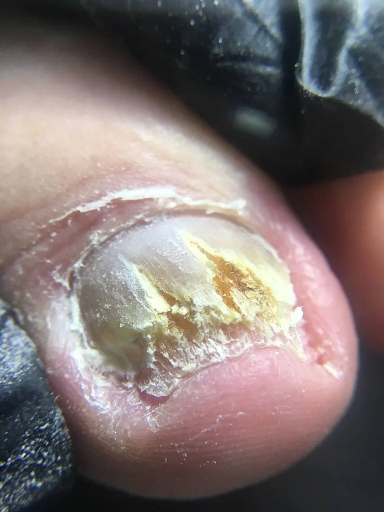

3 min
Destacado · Uñas y piel
Onicomicosis y hongos en la piel
Qué son, cómo se contagian y por qué el tratamiento debe hacerlo un profesional.
hongos uñas onicomicosis micosis pie de atleta tiña contagio dermatofitos podologia podología